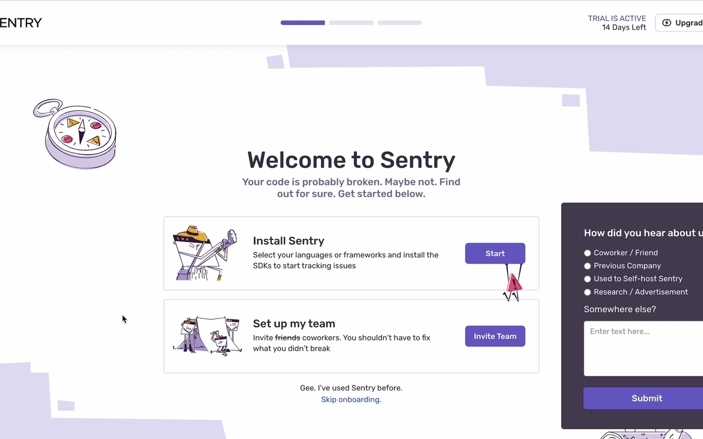
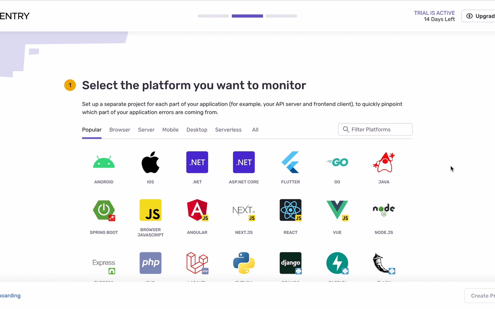
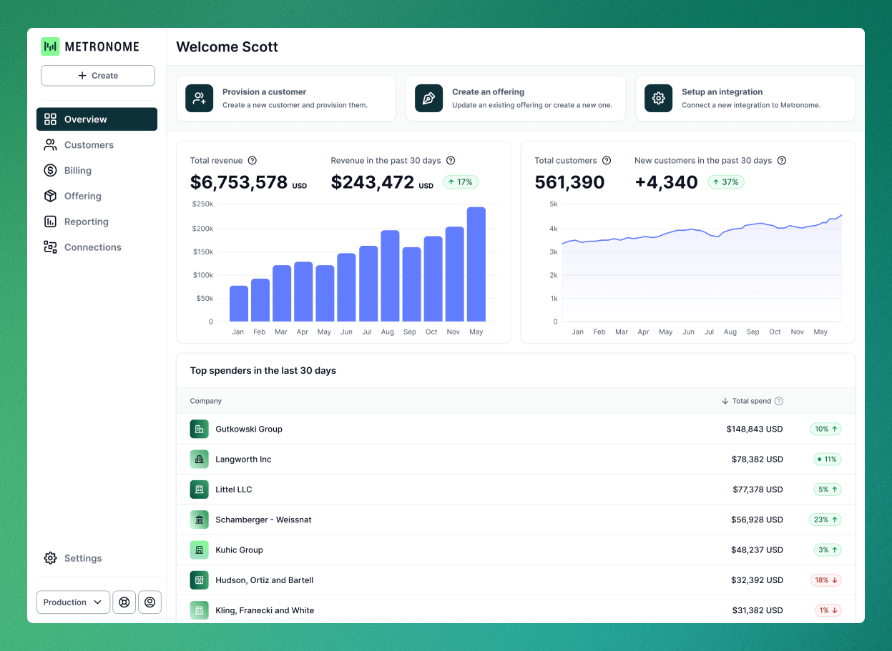
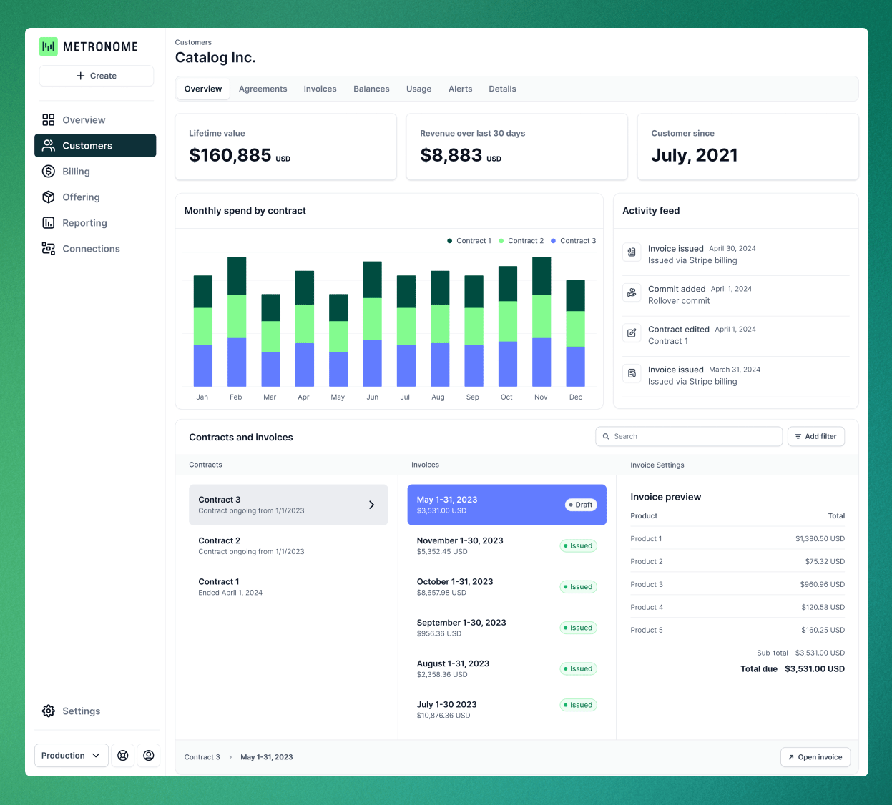
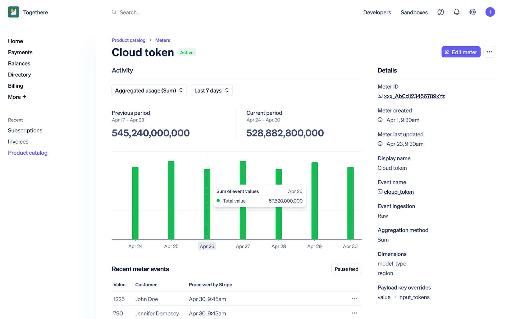
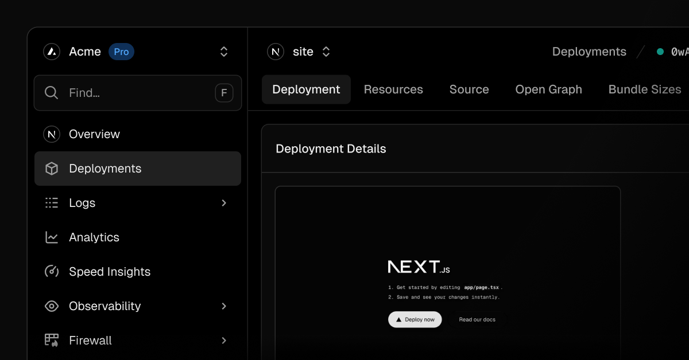
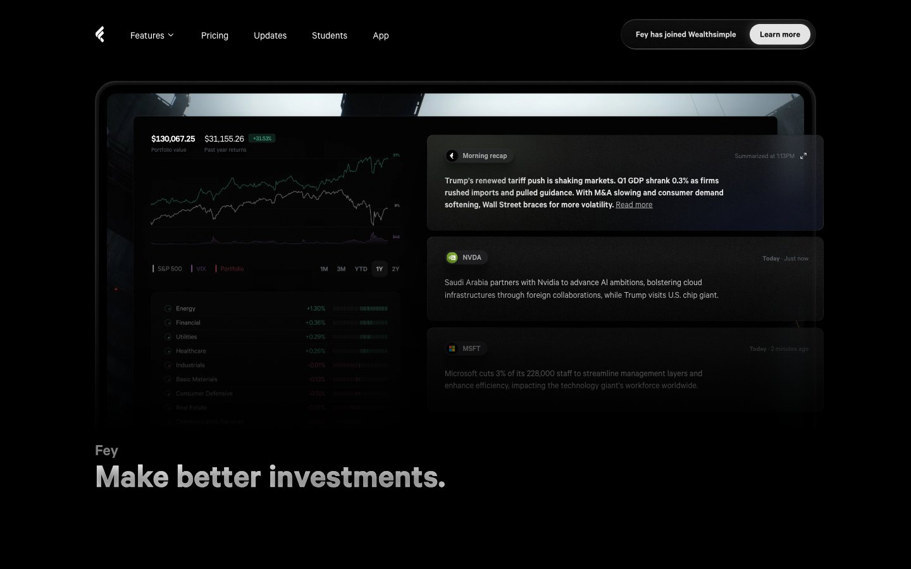
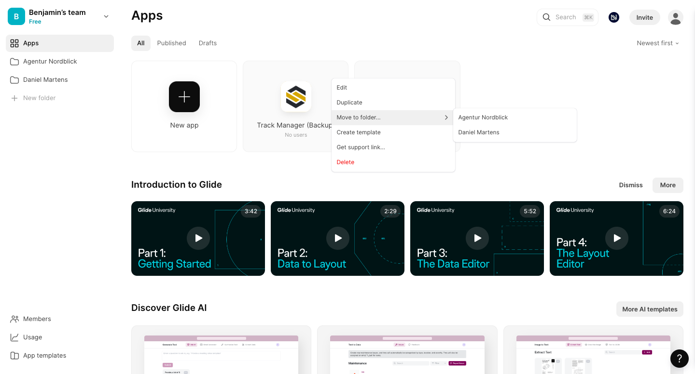

Sentry welcome
Visible progress, plain action verbs, and an onboarding surface that is separate from the marketing site.
The survey competes with setup. Team invitations and other branches appear before the first value.
After email, open a dedicated four-step setup route with one primary action and no side questions.

Sentry platform choice
The step number, progress indicator, and one clear sentence explaining why the choice matters.
A large choice grid creates work. Tollgate already knows the provider and supported request type.
Show JavaScript, Python, and cURL as code tabs only. Default to the shortest working example.

Metronome overview
Stable navigation, important totals first, clear setup actions, and a customer list tied directly to money.
Enterprise reporting categories and growth charts exceed Tollgate's current promise.
Lead with billed amount, raw model cost, margin, and customer rows. Use charts only after useful history exists.

Metronome customer detail
The customer name anchors the whole screen. Summary numbers, activity, and details share one clear context.
Contracts, commitments, invoice status, and payment operations are outside Tollgate's scope.
A customer page should show current-month usage, calculated charge, margin, and the safe call records underneath.

Stripe meter detail
The meter name and active state are unmistakable. Recent events prove data is arriving, while configuration stays secondary.
The global payments navigation and multidimensional meter controls would make Tollgate feel heavier than it is.
Keep meter identity visible and use a live first-call feed during setup. Put raw configuration under Setup.

Vercel project context
Workspace and project identity stay visible. Navigation is persistent, status is near the title, and routes feel like one product.
Nested navigation and many operational sections are unnecessary for four Tollgate surfaces.
Use one meter switcher and four destinations: Overview, Customer usage, Price rule, and Setup.

Fey portfolio
Numbers carry the hierarchy. Compact panels, precise type, and restrained color make a dense screen feel controlled.
Trading-terminal density would hide Tollgate's core path. Some low-contrast labels also ask too much of the reader.
Keep the dark identity and crisp number treatment. Reserve green for healthy states and amber for records that need attention.

Glide workspace
The active team remains visible, the left navigation is stable, and creation is a clear action. Learning content stays secondary to the work.
Template and education cards compete with the product. Tollgate should not make returning users pass through beginner content.
Keep the active meter and its status visible in the shell. Setup remains a route, but onboarding guidance disappears from Overview once data is flowing.
Synthesis / proposed Tollgate direction